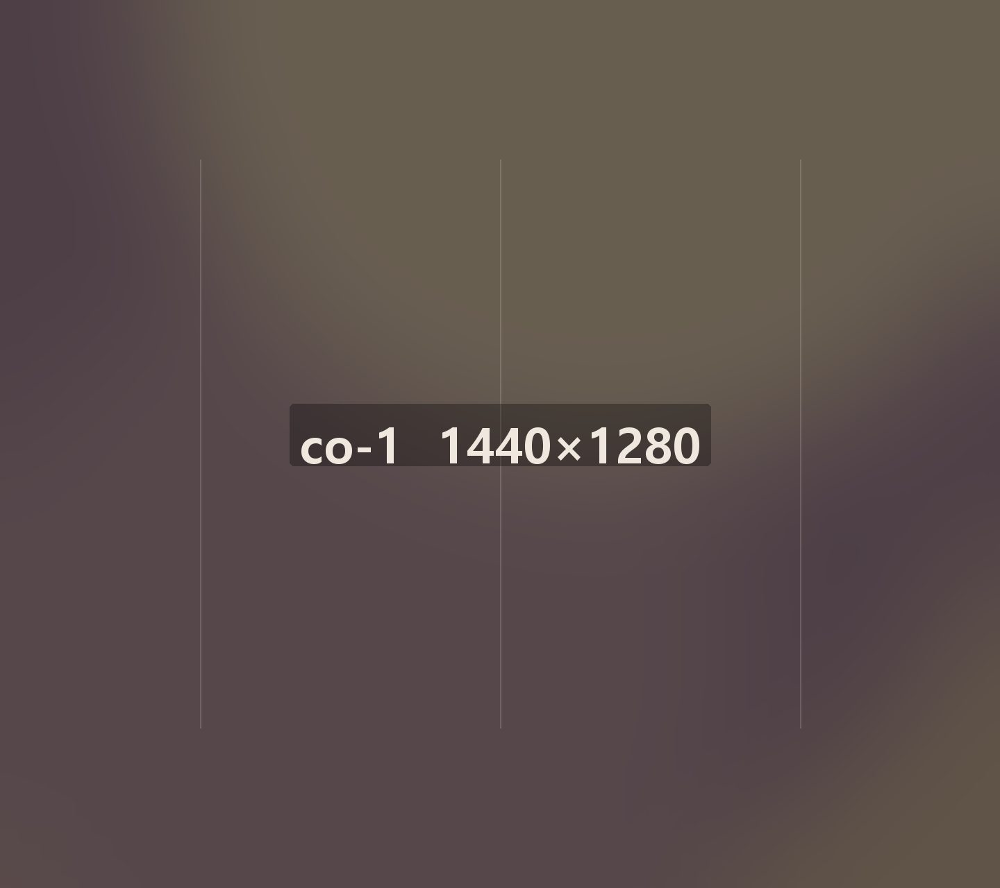
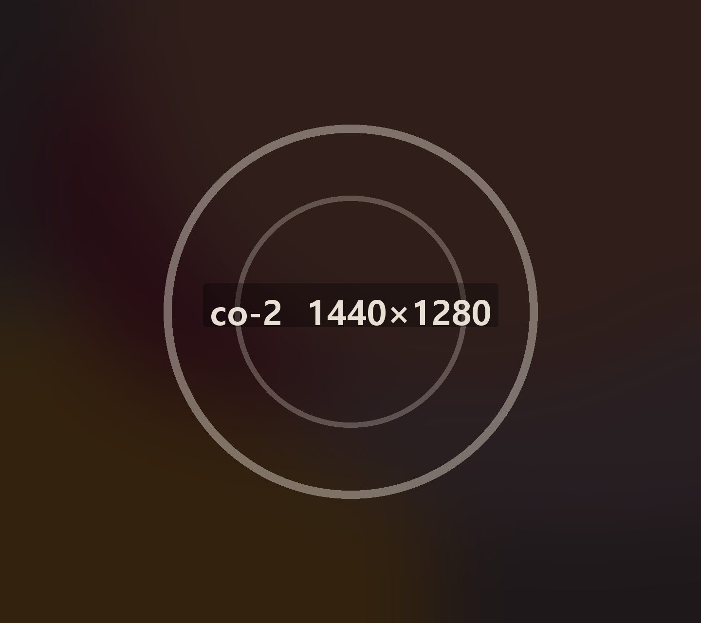
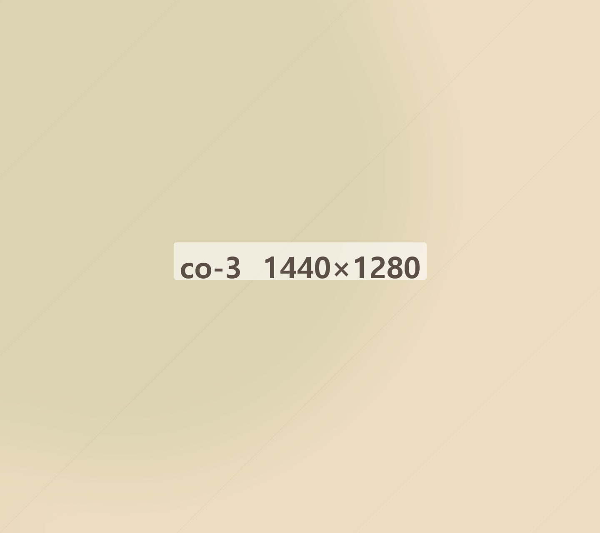

스무 해 동안
밥을 팔았습니다

밥을 파는 회사입니다
2003년 신촌에서 죽집 하나로 시작했습니다. 스무 해 동안 브랜드를 넷으로 늘렸지만 파는 것은 그대로 밥입니다.
본사가 하는 일은 사장님이 장사에만 집중하시도록 나머지를 맡는 것입니다. 레시피를 정하고, 재료를 사서 새벽에 보내고, 새로 여는 매장의 자리를 같이 봅니다.

기준을 정하고 지킵니다
죽을 쑤는 시간, 밥을 앉히는 간격, 반찬을 만드는 아침 시간까지 본사가 기준을 정합니다. 기준이 같아야 어느 매장에서 드셔도 맛이 같습니다.
분기마다 매장을 돌며 기준대로 되고 있는지 봅니다. 잘 안 되는 곳은 담당자가 며칠 상주합니다.

가맹점이 남아야 본사도 남습니다
가맹점 재계약률은 94%입니다. 계약이 끝나면 다시 할지 사장님이 고르시는데 열에 아홉이 다시 하십니다.
5년 연속 폐점률은 1%입니다. 새 매장을 많이 여는 것보다 열린 매장이 오래 가는 것을 먼저 봅니다.
걸어온 길
- 2003신촌에 온죽 1호점 개점
- 2008가맹사업 시작 · 100호점 돌파
- 2011온도시락 출시 · 수도권 물류센터 준공
- 2015온설렁탕 출시 · 500호점 돌파
- 2019전국 물류센터 6곳 체계 완성
- 2021온반상 출시 · 온담 앱 출시
- 2024누적 가맹 매출 3,000억 돌파
- 2026전국 2,140호점 · 소속 브랜드 4개